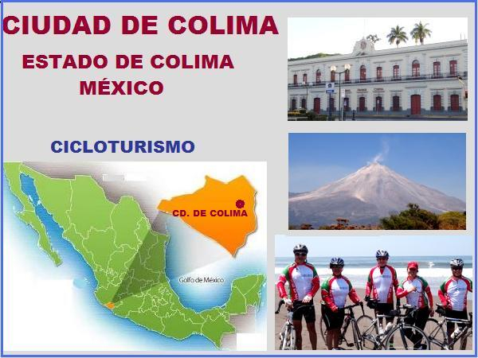

A lo largo de 500 años, el volcán ha tenido más de 40 explosiones desde 1576, de entre las cuales destacan las de 1585, 1606, 1622, 1690, 1818, 1890, 1903, 1913 (el 13 de enero de ese año se cerró el cuarto ciclo de actividad) y 1999. El 6 de junio del 2005, a las 11.00 (hora local), se produjo una columna eruptiva que alcanzó 4 km sobre el volcán, arrojó cenizas de roca y piroclastos, y desde principios de enero del 2013 se ha clasificado en actividad creciente (se produjo una explosión estruendosa el día 29). Su ciclo eruptivo es de aproximadamente 100 años; en 2015 comenzó a presentar un aumento en su actividad que está en constante vigilancia.